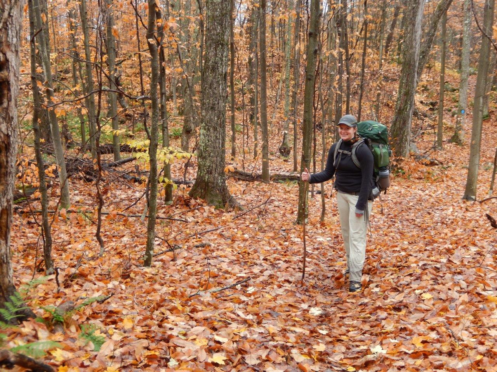
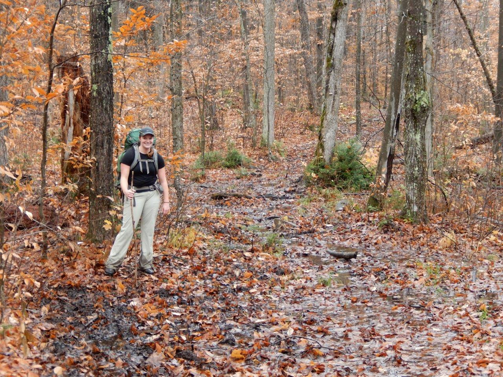
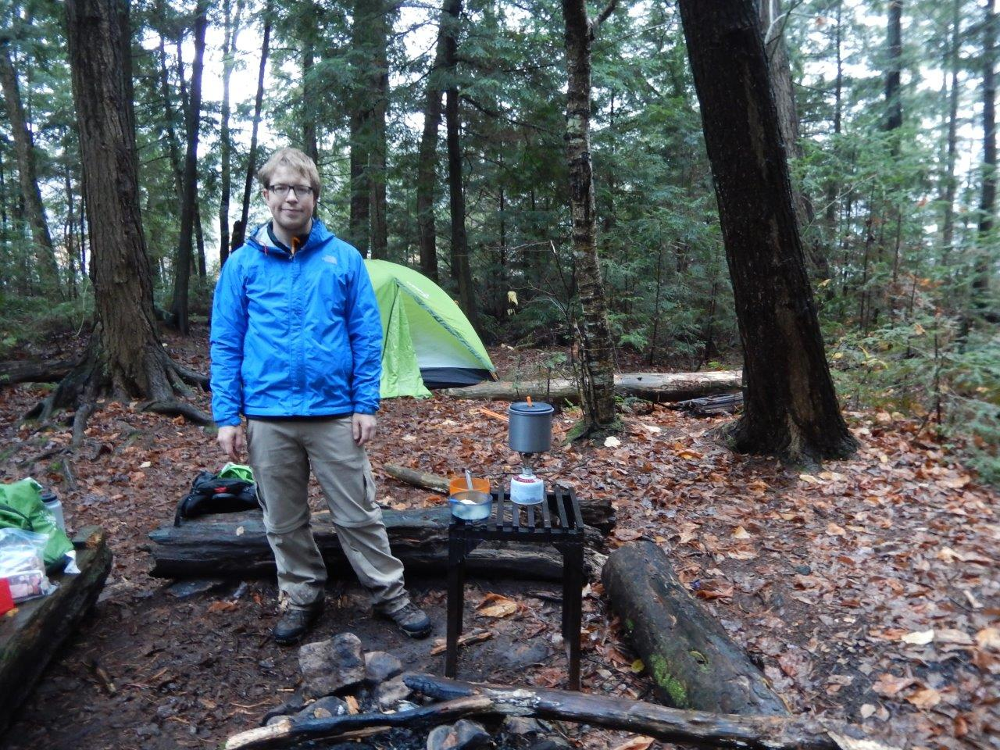

First night destination was Rainbow lake, we didn't make it that far, not because of al of the leaves....



 |
2014 Oct 17, 3 day 2 night attempt at the second loop. First night destination was Rainbow lake, we didn't make it that far, not because of al of the leaves.... |
 |
Mostly due to all of the mud, we ended up hiking beside the trail half the time which cost extra time. |
 |
This site we squatted on (Ramona lake?) which was at the top of the first loop. It was getting late, we were running low on energy and Katie's hip was acting up badly. We bit off more than we could chew here, inexperience. This hike was being done to prep for New Zealand. |
|
Gordon at the Kiosk campground (2021 June). He was happy to play with the axe a bit, but he was a handful during this trip, very exhausting. |